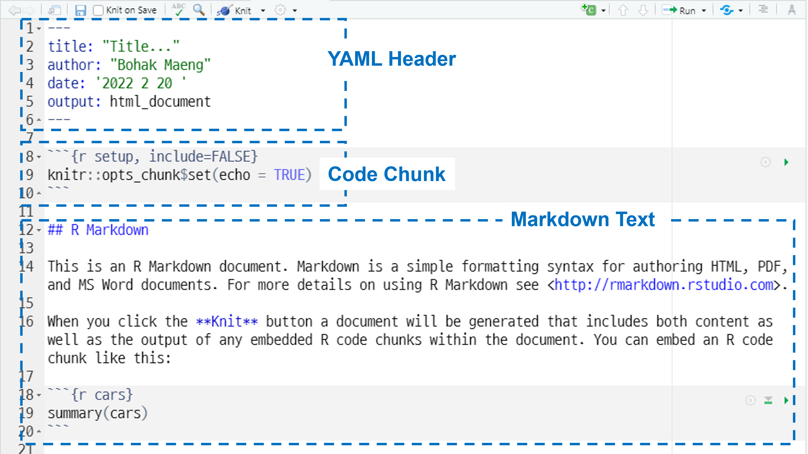

R Markdown 문서 편집
R Markdown을 알면 R로 데이터분석을 하면서 문서를 작성할 때 편리합니다. R Markdown은 평범한 텍스트로 문서를 작성할 수 있게 해 주는 Markdown 언어를 기반으로 하고 있기 때문에 거의 유사합니다.
R Markdown을 이용하려면 rmarkdown 패키지가 필요하지만, 만일 RStudio를 사용하고 있다면 자동으로 이를 이용하기 때문에 설치나 로드를 하지 않아도 됩니다.
문서 서식
R Markdown 문서는 아래 그림처럼 크게 세 개의 파트로 구분됩니다. YAML Header, Code Chunk, Markdown Text입니다.

YAML Header
YAML Header 부분에는 문서의 메타 정보를 작성합니다. 예를 들면 문서의 제목(title), 저자(author), 작성날짜(date), 출력형태(output) 등입니다.
YAML Header를 작성할 때 지켜야 할 몇 가지 규칙이 있습니다.
- 각 필드는 콜론(:)을 이용해서
key: value형태로 입력합니다. 예를 들면title: R Markdown 문서 편집이라고 작성합니다. - value는 대부분 그냥 아무런 표시 없이 입력합니다.
key: value에서 value가 두 개 이상일 경우에는 대괄호([])안에 value를 나열하고 쉼표(,)로 구분합니다. 또는 한 줄에 한 개의 value를 하이픈(-)을 사용해서 나열합니다.- key의 상하관계는 들여쓰기(보통 빈칸 2개)를 해서 구분합니다.
목차 만들기
toc: yes를 설정해주면 목차를 자동으로 생성합니다.
toc_depth: 2는 목차를 생성할 때 목차의 깊이를 설정합니다. 2로 하면 ## 수준까지, 3으로 하면 ### 수준까지 목차를 만들어 줍니다.
---
title: "R Markdown 문서 편집"
output:
html_document:
toc: yes
toc_depth: 2
---유동적인 목차 만들기
목차를 유동적으로 만들려면 toc_float: yes를 설정합니다. 페이지가 길 경우 페이지를 내려도 목차는 계속해서 보입니다.
---
title: "R Markdown 문서 편집"
output:
html_document:
toc: yes
toc_depth: 2
toc_float: yes
---제목에 자동으로 번호 부여하기
number_sections: yes로 설정하면 제목에 자동으로 번호를 부여합니다.
---
title: "R Markdown 문서 편집"
output:
html_document:
toc: yes
toc_depth: 2
number_sections: yes
---탭으로 하위 제목 구분하기
{.tabset}을 이용하면 하위 제목들을 탭 형식으로 만들 수 있습니다.
## 상위 제목 {.tabset}
### 하위 제목 1
### 하위 제목 2
### 하위 제목 3.tabset-fade은 탭이 선택될 때 자연스럽게 사라지고 나타나게 합니다. .tabset-pills은 탭에 색을 넣어주어 잘 보이게 합니다.
## 상위 제목 {.tabset .tabset-fade .tabset-pills}
### 하위 제목 1
### 하위 제목 2
### 하위 제목 3테마로 문서 스타일 변경하기
theme 옵션을 이용하면 html 문서 전체의 모습과 스타일이 설정됩니다. 테마의 종류로는 default, bootstrap, cerulean, cosmo, darkly, flatly, journal, lumen, paper, readable, sandstone, simplex, spacelab, united, yeti 등이 있습니다.
---
title: "R Markdown 문서 편집"
output:
html_document:
toc: yes
number_sections: yes
theme: read
---그림 옵션 설정하기
그림에 대한 옵션을 설정할 수 있습니다.
fig_widthandfig_height: 그림의 기본 크기를 설정fig_caption: 그림 캡션을 렌더링
---
title: "R Markdown 문서 편집"
output:
html_document:
toc: yes
fig_width: 7
fig_height: 6
fig_caption: yes
---데이터 프레임 페이지 형식으로 출력하기
데이터 프레임을 출력할 때 페이지 형식으로 출력하게 할 수 있습니다.
---
title: "R Markdown 문서 편집"
output:
html_document:
toc: yes
df_print: paged
---코드 감추기
코드를 감출 수 있습니다. 코드를 보려면 출력물의 오른쪽에 있는 Code를 클릭하면 됩니다.
---
title: "R Markdown 문서 편집"
output:
html_document:
toc: yes
code_folding: hide
---Code Chunk
R 코드 블록에 대해 다양한 방식으로 설정할 수 있습니다. 예를 들면 코드를 실행하지 않거나 코드를 숨길 수 있습니다.
전체 코드에 대한 디폴트 옵션은 처음에 아래와 같이 보입니다. setup은 이 코드 청크의 이름입니다. 없어도 문제는 없습니다. include=FALSE는 코드를 몰래 실행하라는 의미입니다. opts_chunk$set(echo = TRUE)는 문서 전체에 디폴트 옵션을 설정하는 것입니다. echo = TRUE는 코드를 보여주라는 의미입니다.
```{r setup, include=FALSE}
knitr::opts_chunk$set(echo = TRUE)
```많이 사용되는 옵션들은 다음과 같습니다.
- eval=FALSE : 코드를 실행하지 않음
- echo=FALSE : 코드를 보여주지 않음
- include=FALSE : 실행 결과를 보여주지 않음
- message=FALSE : 실행 때 나오는 메세지를 보여주지 않음
- warning=FALSE : 실행 때 나오는 경고를 보여주지 않음
- error=TRUE : 에러가 있어도 실행하고 에러코드를 보여줌
- fig.height = 7 : 그림 높이, R로 그린 그림에만 해당
- fig.width = 7 : 그림 너비, R로 그린 그림에만 해당
- fig.align = ‘center’ : 그림 위치, R로 그린 그림에만 해당
- fig.cap = “그림 제목” : R로 그린 그림의 제목
- dpi = 300 : 그림의 해상도
- dev = “png” : 그림의 저장 형식
아래는 문서 전체에 디폴트 옵션을 줄때 많이 사용하는 것들입니다.
```{r setup, include=FALSE}
knitr::opts_chunk$set(echo=FALSE, message=FALSE, warning=FALSE, fig.align = "center", fig.height = 8, cache=T, dpi = 300, dev = "png")
```아래 코드는 외부의 그림을 불러 올때 사용하는 방법입니다. 의 방법 대신 knitr::include_graphics()를 사용하면서 chunk 옵션들을 사용하면 좋습니다.
```{r, fig.cap = "tidyverse logo", fig.align = "center", fig.width=7, fig.height=6}
knitr::include_graphics("https://www.tidyverse.org/images/tidyverse-default.png")
``` 아래 코드는 figs 폴더에 있는 rmarkdown_structure.png 그림을 불러오는 방법입니다.
```{r fig.align='center', out.width="50%", fig.cap="R markdown 문서 구조", echo=FALSE}
knitr::include_graphics("rmarkdown_structure.png")
```텍스트 편집(Markdown Text)
아래에서는 주로 R Markdown의 텍스트 편집 코드를 중심으로 정리 하겠습니다.
문단 줄 변경
R Markdown 에서는 키보드 Enter를 쳐서
줄을 바꾸어도 줄이 바꾸지 않습니다.R Markdown 에서는 키보드 Enter를 쳐서 줄을 바꾸어도 줄이 바꾸지 않습니다.
2개의 빈칸으로 줄을 마무리하면
새로운 문단으로 시작합니다.2개의 빈칸으로 줄을 마무리하면
새로운 문단으로 시작합니다.
백슬래시를 사용하면\
새로운 줄을 만들 수 있습니다.백슬래시를 사용하면
새로운 줄을 만들 수 있습니다.
제목
제목 스타일에는 두 가지 방식이 있습니다.
하나는 #기호를 이용하는 방법입니다. 가장 많이 사용합니다. #의 갯수에 따라 제목의 수준이 달라집니다. 만일 특정 제목에 자동 번호를 원하지 않으면 {-}를 제목 뒤에 붙입니다. 예를 들면 ## 제목 {-} 형식으로 입력합니다.
# 1 수준 제목
## 2 수준 제목
### 3 수준 제목
#### 4 수준 제목
##### 5 수준 제목
###### 6 수준 제목1 수준 제목
2 수준 제목
3 수준 제목
4 수준 제목
5 수준 제목
6 수준 제목
다른 방법은 텍스트 아래에 밑줄을 긋는 방식입니다. =은 1수준 제목, -은 2수준 제목입니다.
1 수준 제목
=================
2 수준 제목
-----------------1 수준 제목
2 수준 제목
글자 강조
아래 서식을 문장 중간에 사용할 경우에는 좌우로 띄어쓰기를 해주는 것이 좋습니다.
*이탤릭 글자*
_이탤릭 글자_
**굵은 글자**
__굵은 글자__
~~취소선~~이탤릭 글자
이탤릭 글자
굵은 글자
굵은 글자
취소선
첨자
아래 첨자는 글자 좌우에 ~를 사용하고, 윗 첨자는 글자 좌우에 ^를 사용합니다.
H~3~PO~4~
Cu^2+^H3PO4
Cu2+
코드 블럭
코드 블럭을 만드는 방법은 두 가지 방식이 있습니다. 하나는 ``` 을 이용하는 방법입니다. 가장 많이 사용합니다. 만일 ```를 코드 블럭 안에 넣고 싶다면 1개 더 많은 ````로 감싸면 됩니다.
```
knitr::kable(
mtcars[1:5, ],
caption = "A knitr kable")
```문장 안에서 코드블록을 만드는 방법은 코드 좌우에 `를 입력합니다. 예를 들면 `code` 형식으로 입력하면 됩니다. 만일 `code`를 코드 블럭 안에 넣고 싶다면 1개 더 많은 ``로 감싸면 됩니다. 예를 들면 `` `code` ``와 같이 입력합니다.
목록
순서없는 목록
순서없는 목록을 만들 때 사용되는 글머리 기호는 *, +, -입니다. 이 기호들은 혼합해서 사용하는 것도 가능합니다.
목록을 만들 때에는 전체 목록의 위와 아래에 빈 줄이 있는 것이 좋습니다. 하위 수준의 목록을 만들 때게는 안으로 몇 칸 들여서 작성하면 됩니다.
* 1 수준
* 2 수준
* 3 수준
- 1 수준
- 2 수준
- 3 수준
+ 1 수준
+ 2 수준
+ 3 수준- 1 수준
- 2 수준
- 3 수준
- 2 수준
- 1 수준
- 2 수준
- 3 수준
- 2 수준
- 1 수준
- 2 수준
- 3 수준
- 2 수준
* 1 수준
- 2 수준
+ 3 수준
* 4 수준
- 5수준- 1 수준
- 2 수준
- 3 수준
- 4 수준
- 5수준
- 4 수준
- 3 수준
- 2 수준
순서있는 목록
순서있는 목록은 숫자와 점을 사용합니다. 순서를 바꾸어 써도 무조건 내림 차순으로 다시 정리되어 표현됩니다.
1. 첫번째
2. 두번째
3. 세번재- 첫번째
- 두번째
- 세번재
인용
인용을 표시하는 기호는 >입니다. 매 줄마다 >를 입력합니다.
> 이 문장은 인용 문구 입니다.
> 인용 문구 두번째 문장입니다.
이 문장은 인용 문구 입니다.
줄을 바꾸어 두번째 문장을 만들려면 문단 줄 변경 방법을 사용합니다.
인용 블럭안에는 다른 마크다운 요소를 포함할 수 있습니다.
> 이 문장은 첫번째 인용 문구입니다.
> ```
> 인용문구 안에 있는 코드블록입니다.
> ```이 문장은 첫번째 인용 문구입니다.
인용문구 안에 있는 코드블록입니다.
수평선
수평선은 ***, ---, ___ 등을 이용해서 만듭니다.
***
---
___링크
링크는 외부 링크와 내부 링크로 구분할 수 있습니다. 먼저 외부 링크는 다음과 같이 사용합니다.
- 외부 링크 첫 번째 방법
<https://www.google.com>- 외부 링크 두 번째 방법
[RStudio](https://www.rstudio.com)다음은 문서 내부의 참조 링크 방법입니다.
문서 내부에서 참조 링크를 만드는 방법은 두 가지 방식이 있습니다. 하나는 # 제목과 같이 #으로 시작한 제목에 링크를 거는 방법입니다. 단순히 [제목] 형태로 링크를 거는 방법 입니다. 예를 들면 [문서 서식]이라고 입력하여 문서 서식과 같이 링크를 걸수 있습니다.
또 다른 방식은 제목의 끝에 {#id}를 추가하는 방식입니다. 이렇게 준비가 되어 있으면 [참조링크 텍스트](#id) 방식으로 링크를 걸 수 있습니다. 예를 들면 #### 순서있는 목록 {#순서목록}으로 되어 있으면 [순서가 있는 목록](#순서목록)으로 입력하면 순서가 있는 목록과 같이 링크가 걸립니다.
이미지
이미지를 보여주는 방법은 크게 두 가지로 구분할 수 있습니다. 하나는 R 코드로 차트나 이미지를 만드는 방법입니다. 다른 하나는 외부 이미지 파일을 불러오는 방법입니다.
- R 코드로 차트나 이미지 만들기
```{r fig.cap='차트 그림', fig.align = 'center', fig.width = 6, fig.asp=0.7}
plot(pressure, pch = 19, type = "b")
```
Figure 1: 차트 그림
- 외부 이미지 불러오기
외부 이미지를 불러오는 방법은 를 사용하는 방법과 knitr::include_graphics()를 사용하는 방법이 있습니다. 의 방법 대신 knitr::include_graphics()를 사용하면서 chunk 옵션들을 사용하면 좋습니다.
아래 코드는  방법을 사용하여 sunflower.jpg 그림을 불러오는 방법입니다.
{width=50%}해바라기
아래 코드는 knitr::include_graphics() 를 사용하여 sunflower.jpg 그림을 불러오는 방법입니다.
```{r fig.align='center', out.width="25%", fig.cap="해바라기"}
knitr::include_graphics("sunflower.jpg")
```Figure 2: 해바라기
인터넷에 있는 그림 파일도 불러 올 수 있습니다.
```{r, fig.cap = "tidyverse logo", fig.align = "center", fig.width=5, fig.height=4}
knitr::include_graphics("https://www.tidyverse.org/images/tidyverse-default.png")
``` 
Figure 3: tidyverse logo
참고문헌 인용
R Markdown에서 참고문헌 인용을 자동으로 넣는 방법은 약간 복잡합니다. 먼저 인용할 문헌들이 입력되어 있는 텍스트 파일을 만들어 R markdown 파일에 있는 폴더에 저장하여야 합니다. 인용 문헌 형식은 biblatex을 많이 사용합니다.
인용 문헌 데이터 베이스가 있는 텍스트 파일은 아래와 같은 방식으로 입력되어 있습니다. 파일명은 .bib 형식입니다. 예를 들면 book.bib형식 입니다. 아래 파일에서 R-base나 R-knitr는 각 문헌의 key입니다. 본문에서 인용할 때 사용합니다.
@Manual{R-base,
title = {R: A Language and Environment for Statistical
Computing},
author = {{R Core Team}},
organization = {R Foundation for Statistical Computing},
address = {Vienna, Austria},
year = {2016},
url = {https://www.R-project.org/},
}
@Manual{R-knitr,
title = {knitr: A General-Purpose Package for Dynamic
Report Generation in R},
author = {Yihui Xie},
year = {2021},
note = {R package version 1.37},
url = {https://yihui.org/knitr/},
}다음에는 R Markdown 문서의 YAML Header에 다음과 같이 입력되어 있어야 합니다. citation_package: biblatex가 출력물 부분에 설정되어야 하고, 필요하면 bibliography: ["book.bib"]와 같이 참고문헌이 들어있는 파일("book.bib")을 지정합니다. 참고문헌 파일이 여러 개일 경우에는 bibliography: ["book.bib", "refer2.bib"]와 같이 지정합니다.
---
title: "R Markdown 문서 편집"
output:
html_document:
toc: yes
toc_depth: 2
citation_package: biblatex
bibliography: ["book.bib"]
---다음으로 본 문에서 @key or [@key] 방식으로 인용부호를 삽입합니다. 예를 들면 @R-base로 입력하면 R Core Team (2017) 형태로 나타납니다. [@R-base]으로 입력하면 (R Core Team 2017) 형태로 나타납니다.
knitr 패키지의 write_bib()를 이용하면 R 패키지의 참고문헌 내용을 자동으로 생성할 수 있습니다. 예를 들면 knitr과 stringr 패키지의 참고문헌을 자동을 생성하면 다음과 같습니다.
# 두번째 인자는 저장 할 파일명(*.bib)임. 생략하면 화면에만 출력
knitr::write_bib(c("knitr", "stringr"), "", width = 60)## @Manual{R-knitr,
## title = {knitr: A General-Purpose Package for Dynamic
## Report Generation in R},
## author = {Yihui Xie},
## year = {2021},
## note = {R package version 1.37},
## url = {https://yihui.org/knitr/},
## }
##
## @Manual{R-stringr,
## title = {stringr: Simple, Consistent Wrappers for Common
## String Operations},
## author = {Hadley Wickham},
## year = {2019},
## note = {R package version 1.4.0},
## url = {https://CRAN.R-project.org/package=stringr},
## }
##
## @Book{knitr2015,
## title = {Dynamic Documents with {R} and knitr},
## author = {Yihui Xie},
## publisher = {Chapman and Hall/CRC},
## address = {Boca Raton, Florida},
## year = {2015},
## edition = {2nd},
## note = {ISBN 978-1498716963},
## url = {https://yihui.org/knitr/},
## }
##
## @InCollection{knitr2014,
## booktitle = {Implementing Reproducible Computational
## Research},
## editor = {Victoria Stodden and Friedrich Leisch and Roger
## D. Peng},
## title = {knitr: A Comprehensive Tool for Reproducible
## Research in {R}},
## author = {Yihui Xie},
## publisher = {Chapman and Hall/CRC},
## year = {2014},
## note = {ISBN 978-1466561595},
## url = {http://www.crcpress.com/product/isbn/
## 9781466561595},
## }표
- 기호(|, -, :)를 이용하여 테이블을 만들 수 있습니다. 대시(-)로 제목행과 내용행을 구분합니다. 기본 정렬은 우측 정렬입니다. 대시 앞에 콜론(:-)은 왼쪽 정렬, 대시 뒤에 콜론(-:)은 오른쪽 정렬, 대시 좌우에 콜론(:-:)은 가운데 정렬입니다.
| 과일 | 맛 |
|---|---|
| 사과 | delicious |
| 오렌지 | lovely |
| 망고 | Wow! |
- knitr::kable() 함수를 쓰면 바로 테이블을 만들 수 있습니다. align 옵션에서 가운데 정렬은 ‘c,’ 좌측 정렬은 ‘l,’ 우측 정렬은 ’r’로 지정합니다.
fruit <- data.frame("과일" = c("사과", "오렌지", "망고"),
"맛" = c("delicious", "lovely", "Wow!"))
knitr::kable(fruit, caption = "과일 맛", align = c("l", "c")) | 과일 | 맛 |
|---|---|
| 사과 | delicious |
| 오렌지 | lovely |
| 망고 | Wow! |
- DT::datatable()를 사용해서 테이블을 만들 수 있습니다.
DT::datatable(fruit, caption = "과일 맛", filter = "top")
수식 표현
기본
R Markdown에서 $나 $$로 수식을 감싸면 수식이 작성됩니다.
$는 주로 문장 사이에 수식을 넣을 때 많이 사용되며 기본적으로 왼쪽 정렬입니다.$$는 주로 하나의 문단으로 수식을 넣을 때 많이 사용되며 기본적으로 가운데 정렬입니다.
수식은 $x+y=1$ 입니다.수식은 \(x+y=1\) 입니다.
$$
x+y=1
$$\[ x+y=1 \]
특정 문자 기준 정렬
aligned 심볼을 이용하여 특정 문자를 기준으로 정렬할 수 있습니다. 정렬 기준 기호는 &입니다. 아래에서 \\는 줄을 바꿔주는 기호입니다.
$$
\begin{aligned}
f(x) &= ax^2 + bx + c \\
g(x) &= ax^3
\end{aligned}
$$\[ \begin{aligned} f(x) &= ax^2 + bx + c \\ g(x) &= ax^3 \end{aligned} \]
수식 내에서의 줄 바꿈
수식 내에서 줄을 바꾸려면 \\를 입력해야 합니다. Enter키를 눌러서는 줄이 바꾸지 않습니다.
$$
f(x) = ax^2 + bx + c \\
g(x) = ax^3
$$\[ f(x) = ax^2 + bx + c \\ g(x) = ax^3 \]
수식 내에서의 띄어쓰기
수식 안에서는 빈칸으로 띄어쓰기가 되지 않습니다.
$띄어 쓰기$
$띄어 \, 쓰기$
$띄어 \; 쓰기$
$띄어 \quad 쓰기$- 띄어쓰기 안됨 : \(띄어 쓰기\)
\,은 띄어쓰기 1번 : \(띄어 \, 쓰기\)\;은 띄어쓰기 2번 : \(띄어 \; 쓰기\)\quad은 띄어쓰기 4번 : \(띄어 \quad 쓰기\)
곱셈 기호
$$y = 3 \times x + 5$$\[y = 3 \times x + 5\]
첨자
위 첨자는 ^기호, 아랫 첨자는 _기호를 사용합니다. 만일 두 글자 이상을 첨자로 사용하려면 중괄호 {}기호를 사용합니다.
$$x_1, x^2, x_1^2$$\(x_1, x^2, x_1^2\)
$$y_i = x_i^5 + x_{i-1}^2 + x_{i-2}$$\(y_i = x_i^5 + x_{i-1}^2 + x_{i-2}\)
분수
\frac을 사용하되 분자와 분모는 중괄호 {}로 묶어 줍니다. 분자는 첫번째, 분모는 두번째 위치합니다.
$$\frac {분자}{분모}$$\[\frac {분자}{분모}\]
$$MSE = \frac{1}{m} \sum_{i=1}^{m}(y^i - \theta^T \mathrm{x}^i)^2$$\[MSE = \frac{1}{m} \sum_{i=1}^{m}(y^i - \theta^T \mathrm{x}^i)^2\]
요리 레시피 등에 많이 사용하는 형태의 분수도 만들어 보겠습니다.
$$^1/_2$$\[^1/_2\]
절대값
절대값은 |기호나 \vert를 사용합니다. 분수와 같이 큰 객체에는 |기호를 사용하면 크기가 작기 때문에 이를 자동으로 크게하는 것이 필요합니다. 이를 위해 절대값 기호 왼쪽에 \left와 \right기호를 붙입니다.
$$|5|$$
$$\vert 5 \vert$$\[|5|\] \[\vert 5 \vert\]
$$\left | \frac {분자}{분모} \right |$$\[\left | \frac {분자}{분모} \right |\]
괄호 크기 조정
괄호는 ()기호를 사용합니다. 이 괄호의 크기를 자동으로 조정하려면 \left와 \right 기호를 사용합니다.
$$\left ( \frac{2}{3} \right )$$\[\left ( \frac{2}{3} \right )\]
괄호 크기를 조정할 때 수동으로 조절하는 방법이 있습니다. \big, \Big, \bigg, \Bigg 기호를 사용합니다.
$$\Bigg( \bigg( \Big( \big( () \big) \Big) \bigg) \Bigg)$$\[\Bigg( \bigg( \Big( \big( () \big) \Big) \bigg) \Bigg)\]
생략 점
* 일반 생략점 : $x \dots y$
* 가운데 생략점 : $x \cdots y$
* 세로 생략점 : $x \vdots y$
* 대각선 생략점 : $x \ddots y$- 일반 생략점 : \(x \dots y\)
- 가운데 생략점 : \(x \cdots y\)
- 세로 생략점 : \(x \vdots y\)
- 대각선 생략점 : \(x \ddots y\)
루트(거듭제곱근)
루트는 \sqrt를 사용합니다.
$$\sqrt{2x}$$\[\sqrt{2x}\]
행렬
\begin{matrix}
1 & 2 & 3\\
a & b & c
\end{matrix}\begin{pmatrix}
1 & 2 & 3\\
a & b & c
\end{pmatrix}\begin{Bmatrix}
1 & 2 & 3\\
a & b & c
\end{Bmatrix} \begin{vmatrix}
1 & 2 & 3\\
a & b & c
\end{vmatrix}\begin{Vmatrix}
1 & 2 & 3\\
a & b & c
\end{Vmatrix}그리스 문자
그리스 문자를 표시 하려면 \뒤에 문자 이름을 입력합니다.
$$
\pi = 3.14 \\
\alpha = 3 \pi \omega \\
\lambda_0 = \theta^2 + \delta
$$\[ \pi = 3.14 \\ \alpha = 3 \pi \omega \\ \lambda_0 = \theta^2 + \delta \]
그리스 문자에서 대문자를 표기하려면 문자 이름의 첫 글자를 대문자로 입력하면 됩니다.
그리스 문자를 정리하면 아래 표와 같습니다.
| 문자 | 문자코드 | 대문자 | 대문자코드 |
|---|---|---|---|
| \(\alpha\) | \alpha |
||
| \(\beta\) | \beta |
||
| \(\gamma\) | \gamma |
\(\Gamma\) | \Gamma |
| \(\delta\) | \delta |
\(\Delta\) | \Delta |
| \(\epsilon\) | \epsilon |
||
| \(\varepsilon\) | \varepsilon |
||
| \(\zeta\) | \zeta |
||
| \(\eta\) | \eta |
||
| \(\theta\) | \theta |
\(\Theta\) | \Theta |
| \(\vartheta\) | \vartheta |
||
| \(\iota\) | \iota |
||
| \(\kappa\) | \kappa |
||
| \(\lambda\) | \lambda |
\(\Lambda\) | \Lambda |
| \(\mu\) | \mu |
||
| \(\nu\) | \nu |
||
| \(\xi\) | \xi |
\(\Xi\) | \Xi |
| \(o\) | o |
||
| \(\pi\) | \pi |
\(\Pi\) | \Pi |
| \(\varpi\) | \varpi |
||
| \(\rho\) | \rho |
||
| \(\varrho\) | \varrho |
||
| \(\sigma\) | \sigma |
\(\Sigma\) | \Sigma |
| \(\varsigma\) | \varsigma |
||
| \(\tau\) | \tau |
||
| \(\upsilon\) | \upsilon |
\(\Upsilon\) | \Upsilon |
| \(\phi\) | \phi |
\(\Phi\) | \Phi |
| \(\varphi\) | \varphi |
||
| \(\chi\) | \chi |
||
| \(\psi\) | \psi |
\(\Psi\) | \Psi |
| \(\omega\) | \omega |
\(\Omega\) | \Omega |
로그 등의 기호
log, sin 등과 같은 기호를 표기하려면 단어 앞에 \를 붙여서 사용합니다. 예를 들면 \log와 같이 사용합니다.
$$
\log_{10}(x+5) \\
\sin(-\alpha)=-\sin(\alpha)\\
\arccos(x)=\arcsin(u)\\
\log_n(n)=1\\
\tan(x) = \frac{\sin(x)}{\cos(x)}
$$\[ \log_{10}(x+5) \\ \sin(-\alpha)=-\sin(\alpha)\\ \arccos(x)=\arcsin(u)\\ \log_n(n)=1\\ \tan(x) = \frac{\sin(x)}{\cos(x)} \]
기호들을 정리하면 다음과 같습니다.
| 문자 | 문자코드 | 문자 | 문자코드 | 문자 | 문자코드 |
|---|---|---|---|---|---|
| \(\sin\) | \sin |
\(\sinh\) | \sinh |
\(\arcsin\) | \arcsin |
| \(\cos\) | \cos |
\(\cosh\) | \cos |
\(\arccos\) | \arccos |
| \(\tan\) | \tan |
\(\tanh\) | \tan |
\(\arctan\) | \arctan |
| \(\sec\) | \sec |
\(\coth\) | \coth |
\(\min\) | \min |
| \(\csc\) | \csc |
\(\det\) | \det |
\(\max\) | \max |
| \(\cot\) | \cot |
\(\dim\) | \dim |
\(\inf\) | \inf |
| \(\exp\) | \exp |
\(\ker\) | \ker |
\(\sup\) | \sup |
| \(\log\) | \log |
\(\deg\) | \deg |
\(\liminf\) | \liminf |
| \(\ln\) | \ln |
\(\arg\) | \arg |
\(\limsup\) | \limsup |
| \(\lg\) | \lg |
\(\gcd\) | \gcd |
\(\lim\) | \lim |
이항 연산자 기호
| 기호 | 코드 |
|---|---|
| \(\pm\) | \pm |
| \(\mp\) | \mp |
| \(\times\) | \times |
| \(\div\) | \div |
| \(\ast\) | \ast |
| \(\star\) | \star |
| \(\circ\) | \circ |
| \(\bullet\) | \bullet |
| \(\cdot\) | \cdot |
| \(\cap\) | \cap |
| \(\cup\) | \cup |
| \(\uplus\) | \uplus |
| \(\sqcap\) | \sqcap |
| \(\sqcup\) | \sqcup |
| \(\vee\) | \vee |
| \(\wedge\) | \wedge |
| \(\setminus\) | \setminus |
| \(\wr\) | \wr |
| \(\diamond\) | \diamond |
| \(\bigtriangleup\) | \bigtriangleup |
| \(\bigtriangledown\) | \bigtriangledown |
| \(\triangleleft\) | \triangleleft |
| \(\triangleright\) | \triangleright |
| \(\lhd\) | \lhd |
| \(\rhd\) | \rhd |
| \(\unlhd\) | \unlhd |
| \(\unrhd\) | \unrhd |
| \(\oplus\) | \oplus |
| \(\ominus\) | \ominus |
| \(\otimes\) | \otimes |
| \(\oslash\) | \oslash |
| \(\odot\) | \odot |
| \(\bigcirc\) | \bigcirc |
| \(\dagger\) | \dagger |
| \(\ddagger\) | \ddagger |
| \(\amalg\) | \amalg |
관계 기호
$$\mathbb{N} \subset \mathbb{Z} \subset \mathbb{D} \subset \mathbb{Q} \subset \mathbb{R} \subset \mathbb{C}$$\[\mathbb{N} \subset \mathbb{Z} \subset \mathbb{D} \subset \mathbb{Q} \subset \mathbb{R} \subset \mathbb{C}\]
| 기호 | 코드 |
|---|---|
| \(\leq\) | \leq |
| \(\prec\) | \prec |
| \(\preceq\) | \preceq |
| \(\ll\) | \ll |
| \(\subset\) | \subset |
| \(\subseteq\) | \subseteq |
| \(\sqsubset\) | \sqsubset |
| \(\sqsubseteq\) | \sqsubseteq |
| \(\in\) | \in |
| \(\vdash\) | \vdash |
| \(\geq\) | \geq |
| \(\succ\) | \succ |
| \(\succeq\) | \succeq |
| \(\gg\) | \gg |
| \(\supset\) | \supset |
| \(\supseteq\) | \supseteq |
| \(\sqsupset\) | \sqsupset |
| \(\sqsupseteq\) | \sqsupseteq |
| \(\ni\) | \ni |
| \(\dashv\) | \dashv |
| \(\equiv\) | \equiv |
| \(\sim\) | \sim |
| \(\simeq\) | \simeq |
| \(\asymp\) | \asymp |
| \(\approx\) | \approx |
| \(\cong\) | \cong |
| \(\neq\) | \neq |
| \(\doteq\) | \doteq |
| \(\propto\) | \propto |
| \(\models\) | \models |
| \(\perp\) | \perp |
| \(\mid\) | \mid |
| \(\parallel\) | \parallel |
| \(\bowtie\) | \bowtie |
| \(\Join\) | \Join |
| \(\smile\) | \smile |
| \(\frown\) | \frown |
부정 형태의 기호를 만들려면 \not을 추가합니다. 예를 들면 \(\in\)을 부정형태로 만들려면 $\not\in$으로 코드를 입력하면 \(\not\in\)형태로 표시됩니다. \(\subset\)은 $\not\subset$로 코드를 입력하면 \(\not\subset\)로 표시됩니다.
화살표 기호
| 기호 | 코드 |
|---|---|
| \(\leftarrow\) | \leftarrow |
| \(\Leftarrow\) | \Leftarrow |
| \(\rightarrow\) | \rightarrow |
| \(\Rightarrow\) | \Rightarrow |
| \(\leftrightarrow\) | \leftrightarrow |
| \(\Leftrightarrow\) | \Leftrightarrow |
| \(\mapsto\) | \mapsto |
| \(\hookleftarrow\) | \hookleftarrow |
| \(\leftharpoonup\) | \leftharpoonup |
| \(\leftharpoondown\) | \leftharpoondown |
| \(\rightleftharpoons\) | \rightleftharpoons |
| \(\longleftarrow\) | \longleftarrow |
| \(\Longleftarrow\) | \Longleftarrow |
| \(\longrightarrow\) | \longrightarrow |
| \(\Longrightarrow\) | \Longrightarrow |
| \(\longleftrightarrow\) | \longleftrightarrow |
| \(\Longleftrightarrow\) | \Longleftrightarrow |
| \(\longmapsto\) | \longmapsto |
| \(\hookrightarrow\) | \hookrightarrow |
| \(\rightharpoonup\) | \rightharpoonup |
| \(\rightharpoondown\) | \rightharpoondown |
| \(\leadsto\) | \leadsto |
| \(\uparrow\) | \uparrow |
| \(\Uparrow\) | \Uparrow |
| \(\downarrow\) | \downarrow |
| \(\Downarrow\) | \Downarrow |
| \(\updownarrow\) | \updownarrow |
| \(\Updownarrow\) | \Updownarrow |
| \(\nearrow\) | \nearrow |
| \(\searrow\) | \searrow |
| \(\swarrow\) | \swarrow |
| \(\nwarrow\) | \nwarrow |
기타 기호
| 기호 | 코드 |
|---|---|
| \(\ldots\) | \ldots |
| \(\cdots\) | \cdots |
| \(\vdots\) | \vdots |
| \(\ddots\) | \ddots |
| \(\aleph\) | \aleph |
| \(\prime\) | \prime |
| \(\forall\) | \forall |
| \(\infty\) | \infty |
| \(\hbar\) | \hbar |
| \(\emptyset\) | \emptyset |
| \(\exists\) | \exists |
| \(\Box\) | \Box |
| \(\imath\) | \imath |
| \(\nabla\) | \nabla |
| \(\neg\) | \neg |
| \(\Diamond\) | \Diamond |
| \(\jmath\) | \jmath |
| \(\surd\) | \surd |
| \(\flat\) | \flat |
| \(\triangle\) | \triangle |
| \(\ell\) | \ell |
| \(\top\) | \top |
| \(\natural\) | \natural |
| \(\clubsuit\) | \clubsuit |
| \(\wp\) | \wp |
| \(\bot\) | \bot |
| \(\sharp\) | \sharp |
| \(\diamondsuit\) | \diamondsuit |
| \(\Re\) | \Re |
| \(\backslash\) | \backslash |
| \(\heartsuit\) | \heartsuit |
| \(\Im\) | \Im |
| \(\angle\) | \angle |
| \(\partial\) | \partial |
| \(\spadesuit\) | \spadesuit |
| \(\mho\) | \mho |
가변 크기 기호
| 기호 | 코드 |
|---|---|
| \(\sum\) | \sum |
| \(\prod\) | \prod |
| \(\coprod\) | \coprod |
| \(\int\) | \int |
| \(\oint\) | \oint |
| \(\bigcap\) | \bigcap |
| \(\bigcup\) | \bigcup |
| \(\bigsqcup\) | \bigsqcup |
| \(\bigvee\) | \bigvee |
| \(\bigwedge\) | \bigwedge |
| \(\bigodot\) | \bigodot |
| \(\bigotimes\) | \bigotimes |
| \(\bigoplus\) | \bigoplus |
| \(\biguplus\) | \biguplus |
구분 기호
| 기호 | 코드 |
|---|---|
| \((\) | ( |
| \()\) | ) |
| \(\uparrow\) | \uparrow |
| \(\Uparrow\) | \Uparrow |
| \([\) | [ |
| \(]\) | ] |
| \(\downarrow\) | \downarrow |
| \(\Downarrow\) | \Downarrow |
| \(\{\) | \{ |
| \(\}\) | \} |
| \(\updownarrow\) | \updownarrow |
| \(\Updownarrow\) | \Updownarrow |
| \(\lfloor\) | \lfloor |
| \(\rfloor\) | \rfloor |
| \(\lceil\) | \lceil |
| \(\rceil\) | \rceil |
| \(\langle\) | \langle |
| \(\rangle\) | \rangle |
| \(/\) | / |
| \(\backslash\) | \backslash |
| \(\rmoustache\) | \rmoustache |
| \(\lmoustache\) | \lmoustache |
| \(\rgroup\) | \rgroup |
| \(\lgroup\) | \lgroup |
| \(\arrowvert\) | \arrowvert |
| \(\Arrowvert\) | \Arrowvert |
| \(\bracevert\) | \bracevert |
수학 악센트 기호
$$ \vec{AB} \, \cdot \, \vec{CD} =0 \Rightarrow \vec{AB} \, \perp \, \vec{CD}$$\[ \vec{AB} \, \cdot \, \vec{CD} =0 \Rightarrow \vec{AB} \, \perp \, \vec{CD}\]
| 기호 | 코드 |
|---|---|
| \(\hat{a}\) | \hat{a} |
| \(\acute{a}\) | \acute{a} |
| \(\bar{a}\) | \bar{a} |
| \(\dot{a}\) | \dot{a} |
| \(\breve{a}\) | \breve{a} |
| \(\check{a}\) | \check{a} |
| \(\grave{a}\) | \grave{a} |
| \(\vec{a}\) | \vec{a} |
| \(\ddot{a}\) | \ddot{a} |
| \(\tilde{a}\) | \tilde{a} |
| \(\widetilde{abc}\) | \widetilde{abc} |
| \(\overleftarrow{abc}\) | \overleftarrow{abc} |
| \(\overline{abc}\) | \overline{abc} |
| \(\overbrace{abc}\) | \overbrace{abc} |
| \(\sqrt{abc}\) | \sqrt{abc} |
| \(f'\) | f' |
| \(\widehat{abc}\) | \widehat{abc} |
| \(\overrightarrow{abc}\) | \overrightarrow{abc} |
| \(\underline{abc}\) | \underline{abc} |
| \(\underbrace{abc}\) | \underbrace{abc} |
| \(\sqrt[n]{abc}\) | \sqrt[n]{abc} |
| \(\frac{abc}{xyz}\) | \frac{abc}{xyz} |
사용 사례
$$
sign(x) = \left\{
\begin{array}\\
1 & \mbox{if } \ x \in \mathbf{N}^* \\
0 & \mbox{if } \ x = 0 \\
-1 & \mbox{else.}
\end{array}
\right.
$$\[ sign(x) = \left\{ \begin{array}\\ 1 & \mbox{if } \ x \in \mathbf{N}^* \\ 0 & \mbox{if } \ x = 0 \\ -1 & \mbox{else.} \end{array} \right. \]
$$
\left.
\begin{array} \\
\alpha^2 = \sqrt5 \\
\alpha \geq 0
\end{array}
\right \}=\alpha = 5
$$\[ \left. \begin{array} \\ \alpha^2 = \sqrt5 \\ \alpha \geq 0 \end{array} \right \}=\alpha = 5 \]
$$
\underbrace{\ln \left( \frac{5}{6} \right)}_{\simeq -0.1823}
< \overbrace{\exp (2)}^{\simeq 7.3890}
$$\[ \underbrace{\ln \left( \frac{5}{6} \right)}_{\simeq -0.1823} < \overbrace{\exp (2)}^{\simeq 7.3890} \]
$$f'(x)$$\[f'(x)\]
$$\frac{\partial f}{\partial x}$$\[\frac{\partial f}{\partial x}\]
$$\lim_{x \to +\infty} f(x)$$\[\lim_{x \to +\infty} f(x)\]
$$\max_{x \in [a,b]}f(x)$$\[\max_{x \in [a,b]}f(x)\]
$$\sum^k_{i=1}\sum^{l+1}_{j=1}\,A_i A_j$$\[\sum^k_{i=1}\sum^{l+1}_{j=1}\,A_i A_j\]
$$ e^x = \sum_{k=0}^{n}\, \frac{x^k}{k!} + o(x^n) $$ \[ e^x = \sum_{k=0}^{n}\, \frac{x^k}{k!} + o(x^n) \]
$$\prod^k_{i=1}\prod^l_{j=1}\,A_i A_j$$ \[\prod^k_{i=1}\prod^l_{j=1}\,A_i A_j\]
$$\int_{a}^b\int_{c}^d f(x,y)\,dxdy$$ \[\int_{a}^b\int_{c}^d f(x,y)\,dxdy\]
$$
\hat{y} = \theta \cdot \mathrm{x}
$$\[ \hat{y} = \theta \cdot \mathrm{x} \]
$$RMSE = \sqrt{\frac{1}{m} \sum_{i=1}^{m}(y^i - \theta^T\mathrm{x}^i)^2}$$\[RMSE = \sqrt{\frac{1}{m} \sum_{i=1}^{m}(y^i - \theta^T\mathrm{x}^i)^2}\]
$$\nabla \mathrm{MSE}(\theta) = \frac{2}{m} X^T (X \theta - y)$$\[\nabla \mathrm{MSE}(\theta) = \frac{2}{m} X^T (X \theta - y)\]
$$
J(\theta) = \rm{MSE(\theta)} + \lambda(\frac{(1-\alpha)}{2} \sum_{i=1}^{n}{\theta_i^2} + \alpha \sum_{i=1}^{n}{|\theta_i|})
$$\[ J(\theta) = \rm{MSE(\theta)} + \lambda(\frac{(1-\alpha)}{2} \sum_{i=1}^{n}{\theta_i^2} + \alpha \sum_{i=1}^{n}{|\theta_i|}) \]
This is a footnote.↩︎